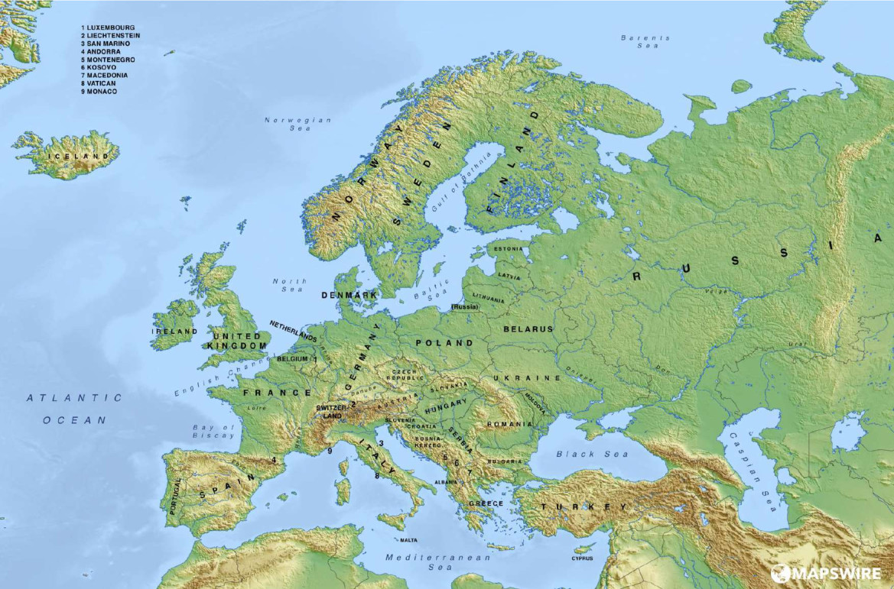

Siguiente:
Situación y relieve de
Subir:
Trimestre 1
Anterior:
El ser humano y
Índice General
Relieve e hidrografía de España y de Europa
Figura:
Mapa físico de Europa

Subsecciones
Situación y relieve de España
Situación de España
Relieve de España
Relieve de interior peninsular
Relieve de interior peninsular
El relieve costero peninsular
El relieve de los archipiélagos
El relieve de Andalucía
La situación y el relieve de Europa
El relieve
El relieve de interior: llanuras, montañas antiguas y montañas jóvenes
El relieve de costa
La modificación del relieve
La hidrosfera: las aguas del planeta
La hidrosfera y su distribución
La hidrosfera y su clasificación
La importancia de la hidrosfera
Las aguas continentales
Los ríos
Otras aguas
La hidrografía de España
Características de los ríos españoles
Vertientes hidrográficas
Los ríos de la vertiente cantábrica
Los ríos de la vertiente atlántica
Los ríos de la vertiente mediterránea
La hidrografía de los archipiélagos
La hidrografía de Andalucía
Los ríos andaluces
Los ríos de la vertiente atlántica
Los ríos de la vertiente mediterránea
Las lagunas y los humedales
La hidrografía de Europa
Los océanos y los mares
Los lagos europeos
Los ríos europeos
Los ríos de las vertientes ártica y atlántica
Los ríos de la vertiente mediterránea
Los ríos que desembocan en los mares interiores
Utilización y conservación: consumo responsable
El agua, un recurso imprescindible
Medidas de ahorro y consumo responsable
Algunas medidas para el ahorro del agua